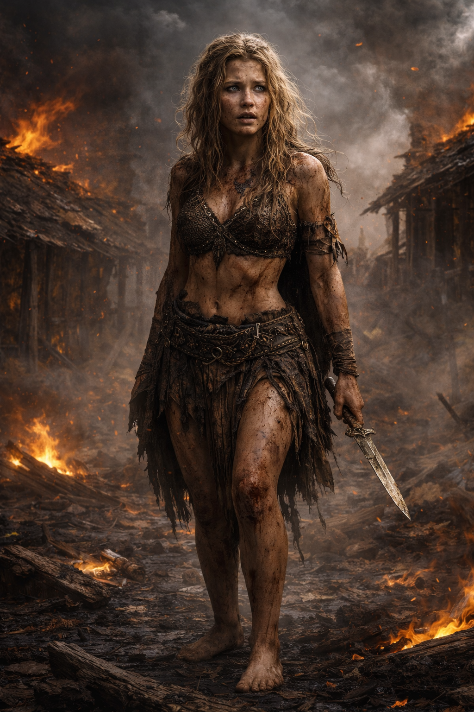
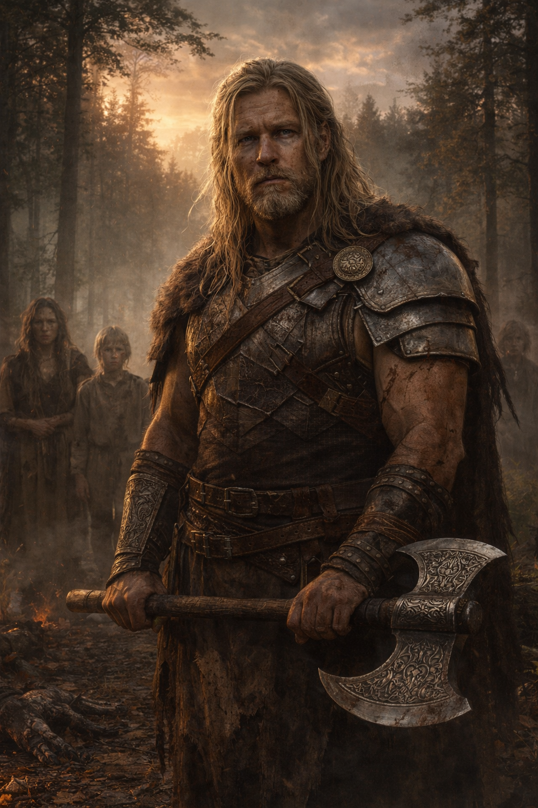
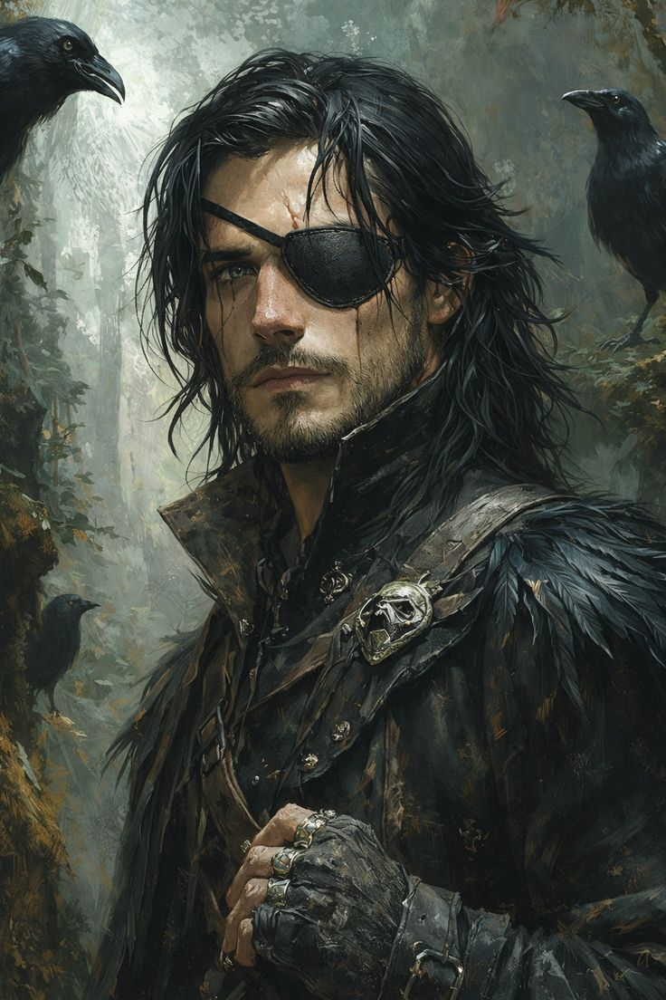
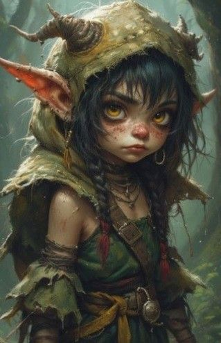

The Festival of Bloomtide
As the long chill of Frostdeep draws to an end, the kingdom of Faningor
prepares to welcome the season of Bloomtide with celebration.
By royal decree, King Arden Vane II has called for a grand
festival in the capital—a five-day gathering of feasting, music, games,
and ceremony, open to all citizens of Faningor and those who stand among
its allies.
Travelers, merchants, nobles, and wanderers alike are expected to arrive
from across the realm and beyond. Streets will be adorned, markets will
flourish, and the city will come alive in a rare moment of unity and joy.
Our heroes, each for their own personal reasons, find themselves drawn to
this festival. Whether by invitation, duty, curiosity, or chance, their
paths lead them to Faningor at the turning of the season.
Yet beneath the celebration, there lingers a quiet unease.
The past year has seen subtle shifts across the lands—movements harder to
explain, silences where there once was openness, and a growing sense that
something is changing beyond the notice of most.
Few speak of it openly. Fewer still understand it.
For now, however, the banners are raised, the gates are open, and the
festival awaits.
And so begins our story.
The story begins not with answers, but with confusion.
Our heroes awoke deep within a cave high inside a mountain,
battered, exhausted, and with no memory of how they had arrived there.
Their names, skills, and companions remained familiar, yet everything
that had happened since their first arrival in Faningor seem to have been wiped
clean from their minds. Around them lay six strange gemstones, now dull
and lifeless, and the remnants of equipment scorched by some immense force.
With the mountain trembling around them and the threat of collapse
ever-present, the party had little choice but to flee.
Emerging from the cave, they were met by a sight none of them recognized.
Vast forests stretched across the land below, and in the distance a village
burned. Drawn by equal parts necessity and curiosity, they descended the
mountain and made their way toward the settlement.
What they found was devastation.
The village had been almost completely destroyed. Homes lay in ruins,
fires still smouldered among the wreckage, and the remains of its inhabitants
told a grim tale of catastrophe. Searching for supplies and answers, the
party instead found themselves facing a new danger as a group of frenzied
hill giants descended upon the ruins.
Outnumbered and pressed on all sides, the heroes fought desperately for
survival. As the battle seemed on the verge of overwhelming them, a colossal
shadow swept across the land. A deafening roar echoed from above, shaking
the earth itself.
The giants froze.
Then, gripped by fear, they fled.
Whatever creature had passed overhead was evidently feared even by these
savage giants.
With the immediate danger gone, the party gathered themselves among the
ruins and took shelter for the night. Questions far outnumbered answers,
and sleep brought little comfort.
At dawn, they awoke to find a lone stranger watching them from the edge of
the settlement. Communication proved impossible; she spoke a language none
of the heroes understood. Yet her urgency was unmistakable. Through gestures
and determined insistence, she implored the party to follow her.
With no better lead and nowhere else to turn, the heroes chose to trust the
mysterious woman and set off into the wilderness.
Session 2 – Into the Heart of the Forest
The mysterious woman led the party ever deeper into the forests.
For three long days they travelled beneath the endless canopy, surviving on what they could hunt and forage while enduring damp nights beneath the trees. Though words failed them, small moments of understanding slowly emerged. Through divine magic, one of the heroes briefly bridged the language barrier, allowing fragments of the woman's story to be shared as the journey continued. Her name is Melnah.
Eventually, the forest opened onto a makeshift camp hidden among the ancient trees.
There the heroes met the last survivors of the ruined village and their newly appointed leader, Helfkor Brightmane, whose people now numbered only a handful. Before questions could be answered, another familiar face emerged from the camp.
Captain Rolor D'Amarth, master of the vessel that had carried the party across the sea, recounted the events following their departure from Alrais. He revealed the identity of a mysterious companion named Srilissa, a female drow who had travelled beside them during their expedition into the mountain.
Yet Srilissa herself was nowhere to be found.
Determined to lead his people to safety, Helfkor urged everyone onward toward Bramblebarrow, a hidden forest-gnome settlement known only to a select few. The journey proved anything but peaceful. Deep within the forest, the party was ambushed by two fearsome green wyrmlings. After a fierce battle, one of the creatures was slain while the other escaped into the wilderness.
Soon afterwards, the travellers reached Bramblebarrow, where they were welcomed by Keeper Elowen Dewpetal. She revealed that the secluded village had only allowed itself to be found because of her long-standing friendship with Helfkor and the people of Dravyl.
As stories were exchanged, the mysteries surrounding the heroes only deepened. Elowen spoke of subtle yet undeniable changes that had spread throughout the world since the great volcanic eruption. Rather than descending into chaos, nature itself appeared calmer—as though an unseen burden had finally been lifted.
According to ancient tales and recent whispers alike, the heroes had entered the mountain in pursuit of a purpose far greater than they remembered: to save the world from an approaching calamity. The six gemstones they had carried into the mountain, once said to pulse with strange life, had become nothing more than lifeless relics.
Most unsettling of all were Elowen's final words. The ancient trees of the forest, she claimed, whispered that the party carried within them the echo of an ancient magic—one that belonged to an age before the kingdoms of today, and to a land long since lost.
With far more questions than answers, the heroes accepted Elowen's hospitality and remained in Bramblebarrow to recover from their trials.
For now, their search for the truth would have to wait another day...
NPCs Encountered

Melnah
Survivor of Dravyl and scout.

Helfkor Brightmane
Newly appointed leader of the surviving Dravyl.

Captain Rolor D'Amarth
Veteran captain who finally revealed what happened after the voyage to Vernia.

Keeper Elowen Dewpetal
Keeper of Bramblebarrow and guardian of ancient knowledge.